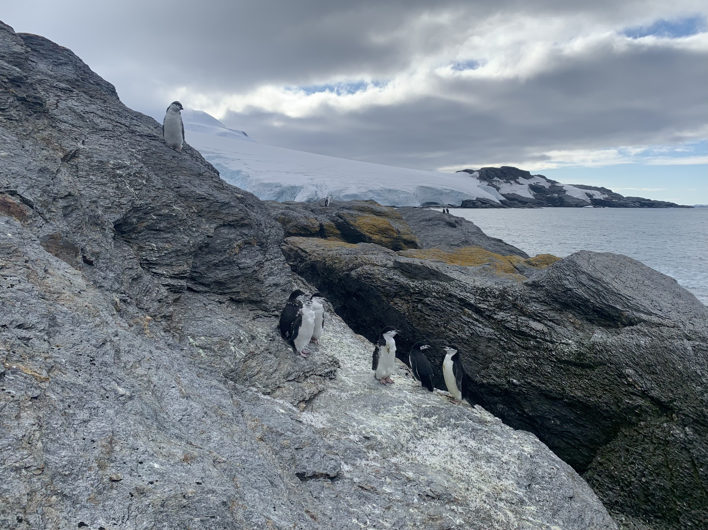
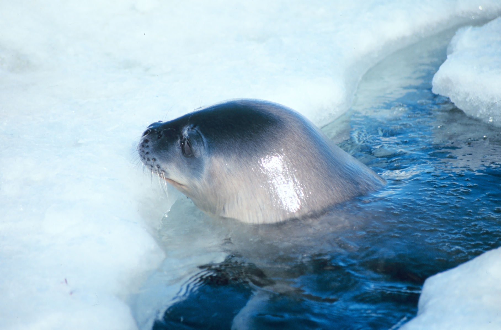
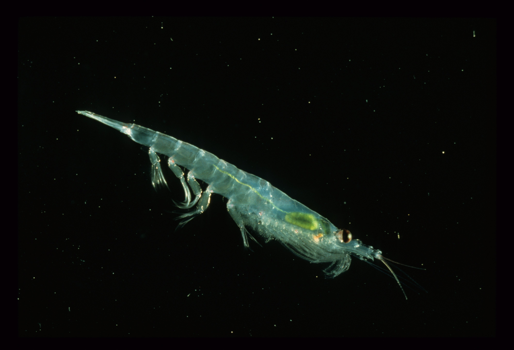

TIERWELT DER ANTARKTIS
Leben zwischen
Eis und Meer.
Vom winzigen Krebstier bis zum geschickten Taucher: Drei Einblicke zeigen, wie Tiere hier leben und wie eng ihre Nahrung miteinander verbunden ist.

Pinguine
Im Porträt: Zügelpinguin · Pygoscelis antarctica
Die schwarze Linie unter dem Kinn gibt dem Zügelpinguin seinen Namen. Diese Art brütet vor allem an der Antarktischen Halbinsel und auf Inseln des Südatlantiks. Auf dem Foto siehst du Tiere an einer felsigen Küste.
Ein Leben in Kolonien
Zur Brutzeit kommen die Tiere an Land zusammen. Beide Eltern übernehmen das Brüten und kümmern sich um den Nachwuchs. Die Nahrung finden sie im Meer; Krill ist ihre wichtigste Beute.
Ihre Rolle im Ökosystem
Zügelpinguine sind Teil des Nahrungsnetzes: Sie fressen kleine Meerestiere und können selbst etwa Seeleoparden zum Opfer fallen. Andere Pinguinarten ernähren sich stärker von Fisch. Deshalb wirkt sich ein verändertes Nahrungsangebot nicht auf alle Arten gleich aus.
Fachquelle: Australian Antarctic Program
Robben
Im Porträt: Weddellrobbe · Leptonychotes weddellii
Weddellrobben leben an den antarktischen Küsten und sind eng mit dem Festeis verbunden – Meereis, das an der Küste verankert ist. Auf dem Eis ruhen sie und bringen ihre Jungen zur Welt. Unter Wasser suchen sie Nahrung.
Atmen unter dem Eis
Als Säugetiere müssen sie zum Atmen auftauchen. Mit ihren Zähnen halten sie Öffnungen im Eis frei. Auch in der Dunkelheit des Polarwinters müssen sie zuverlässig zu diesen Atemlöchern zurückfinden.
Ihre Rolle im Ökosystem
Weddellrobben jagen vor allem Fische, außerdem Tintenfische und weitere Meerestiere. Robbenarten haben unterschiedliche Speisepläne: Krabbenfresserrobben sind beispielsweise besonders auf Krill spezialisiert. Die Weddellrobbe auf unserem Foto steht daher für einen anderen Teil des Nahrungsnetzes.
Fachquelle: Australian Antarctic Program
Antarktischer Krill
Kleines Krebstier · Euphausia superba
Krill sieht einer kleinen Garnele ähnlich. Sein Körper ist weitgehend durchsichtig, mit rötlichen Farbpunkten und auffälligen dunklen Augen. Antarktischer Krill wird etwa sechs Zentimeter lang und lebt in großen Schwärmen im Südlichen Ozean.
Von Algen zu großen Meerestieren
Krill frisst unter anderem mikroskopisch kleine Algen. Junge Tiere finden Nahrung auch an der Unterseite des Meereises. Krill wird wiederum von vielen Pinguinen, Fischen, einigen Robbenarten und Bartenwalen gefressen. So gelangt die in Algen gespeicherte Energie zu größeren Tieren.
Warum das Meereis zählt
Besonders in der frühen Entwicklung sind passende Eis- und Nahrungsbedingungen wichtig. Veränderungen des Meereises können deshalb weit über den Krill hinaus wirken: Viele Tiere sind direkt oder über ihre Beute von ihm abhängig.
Fachquelle: Australian Antarctic ProgramALLES HÄNGT ZUSAMMEN
Ein kleines Tier verbindet viele.
Phytoplankton nutzt Sonnenlicht zum Wachsen. Krill frisst diese winzigen Algen und wird selbst zur Nahrung. Ein vereinfachter Ausschnitt zeigt, wie Energie im Meer weitergegeben wird:
Die Pfeile bedeuten „wird gefressen von“. In der Natur verzweigen sich solche Nahrungsketten zu einem Netz: Fische, Tintenfische, Robben und Wale sind auf unterschiedlichen Wegen verbunden.
Fachquelle: Das antarktische Nahrungsnetz